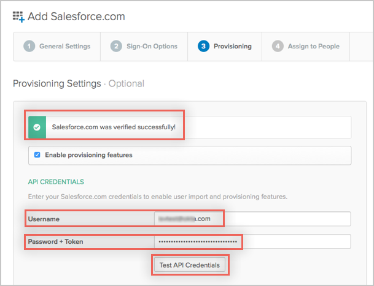

This guide provides the steps required to configure Provisioning for Salesforce.
Create an administrator account in Salesforce. You will use this account’s username and password in to configure the Salesforce app in Okta. When you create an administrator account, salesforce will provide you with a token.
Note: Every time you reset this account’s password, Salesforce will provide you with a new token, and you need to edit the Salesforce app’s Provisioning settings in Okta using the new password/token as described below.
You are now ready to configure your Provisioning settings as follows:
In the API Credentials section, enter the Username, Password and Token associated with your Salesforce Administrator account.
Note: Simply append the token Salesforce provided to you to your password, no spaces or other characters.
Click Test API Credentials; if successful, a verification message appears at the top of the screen, as shown below:

Scroll down and specify the type of Provisioning Features you want to enable, then click Next.
You can now assign people to the app (if needed) and finish the application setup.